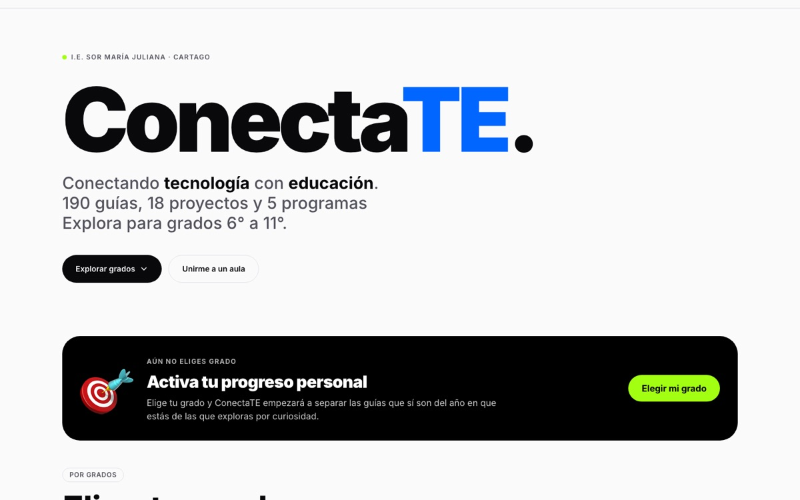
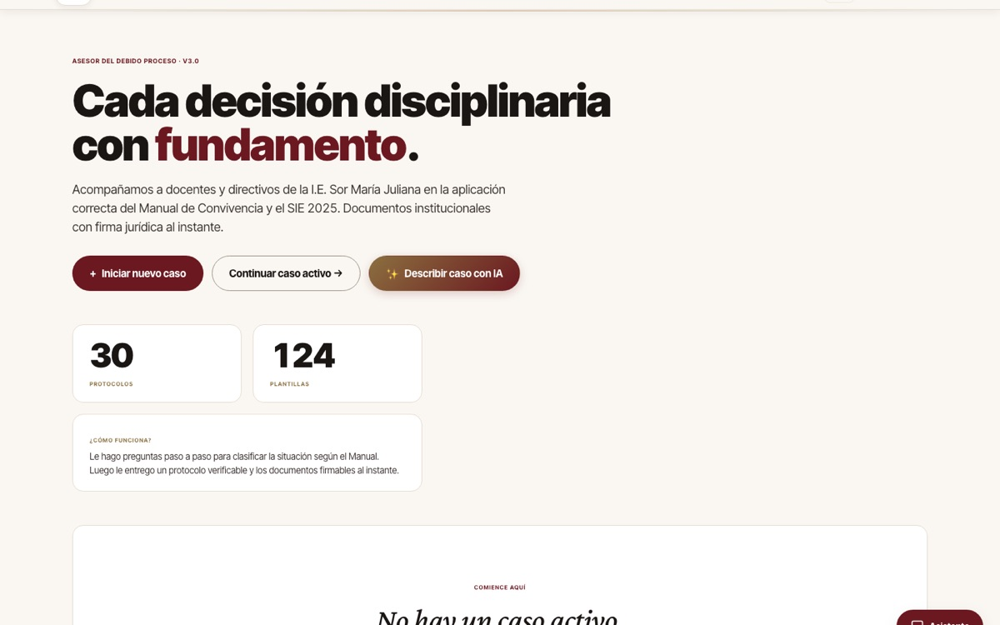
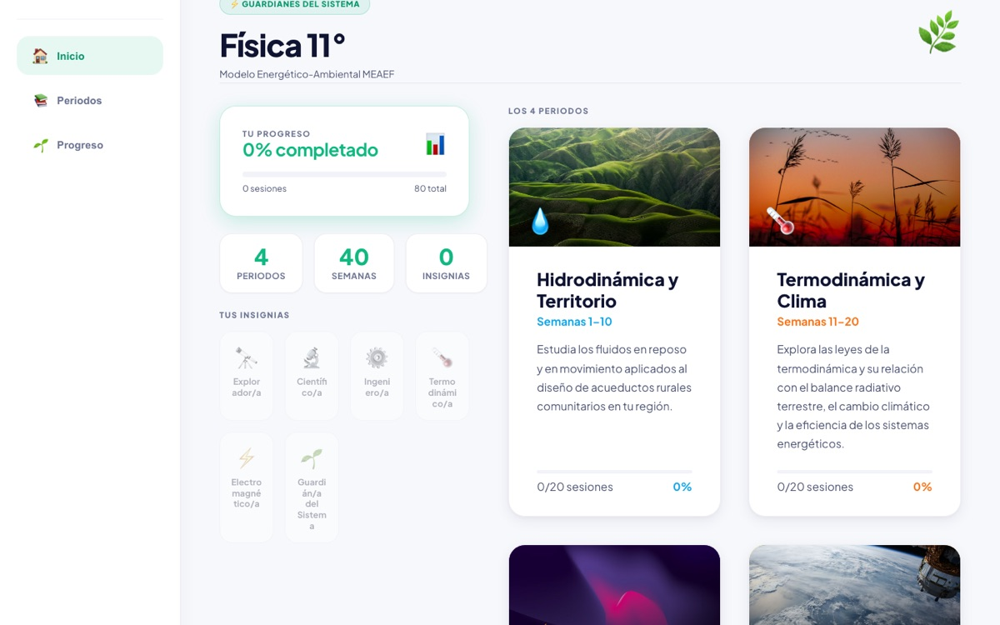

Desarrollo de software a medida.
Plataformas educativas, aplicaciones web instalables que funcionan sin conexión, automatización de documentos y asistentes con IA. Lo concibo, lo diseño y lo construyo de principio a fin, como ingeniero de sistemas de la UTP.
Desarrollo a medida · Ingeniero de sistemas · Respuesta en máximo 24 horas
Lo que ofrezco.
Dr. Álvaro Cárdenas Orozco · ingeniero de sistemas, doctor en Ciencias de la Educación y autor. Cartago, Valle del Cauca, con trabajo en toda Colombia.
- 01
Plataformas educativas
Sitios completos con guías, exámenes, cuentas, aulas para el docente e informes automáticos a las familias.
- 02
Aplicaciones que funcionan sin conexión
Aplicaciones web instalables para celulares de gama media, datos limitados y conexión intermitente.
- 03
Automatización de documentos
El contenido se escribe una vez y sale en la web, en Word y en PDF; plantillas que se llenan solas.
- 04
Asistentes con IA sobre normas propias
Herramientas que guían procesos con las normas de la institución, con y sin IA.
- 05
Visión por computador en el equipo
Soluciones que procesan imágenes en el propio equipo, sin enviar datos sensibles a internet.
- 06
Sitios web para negocios
Marca y sitio de una página, con cada servicio conectado a WhatsApp.
Lo que ya está hecho.

CasoConectaTE: una plataforma completa para 6.º a 11.ºLeer el caso
CasoConciencIA: el debido proceso, paso a pasoLeer el caso CasoDesarrollo con agentes de IA: una persona, una plataforma completaLeer el caso CasoAsistencia por reconocimiento facial sin enviar nada a internetLeer el caso CasoTaller de inyección: marca y sitio para un negocio localLeer el caso
CasoFísica 11: recursos interactivos con IALeer el casoPreguntas frecuentes.
¿Qué tipo de software desarrolla?
Plataformas web, aplicaciones instalables que funcionan sin conexión, automatización de documentos y herramientas con inteligencia artificial, sobre todo para instituciones educativas y negocios locales.
¿Las aplicaciones funcionan sin internet?
Pueden hacerlo. ConectaTE, ConciencIA y MEAEF se diseñaron para funcionar sin conexión una vez instaladas.
¿Cómo se protegen los datos de los estudiantes?
Con consentimiento del acudiente, procesamiento en el propio equipo cuando es posible y borrado a pedido. El prototipo de asistencia no envía datos biométricos a internet.
¿Cuánto cuesta un desarrollo?
Depende del alcance. Se cotiza después de una conversación de 30 minutos, y la respuesta llega en un máximo de 24 horas.
Conversemos sobre su proyecto.
Una conversación de 30 minutos para entender lo que necesita. Respondo en un máximo de 24 horas.